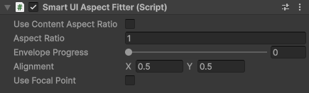
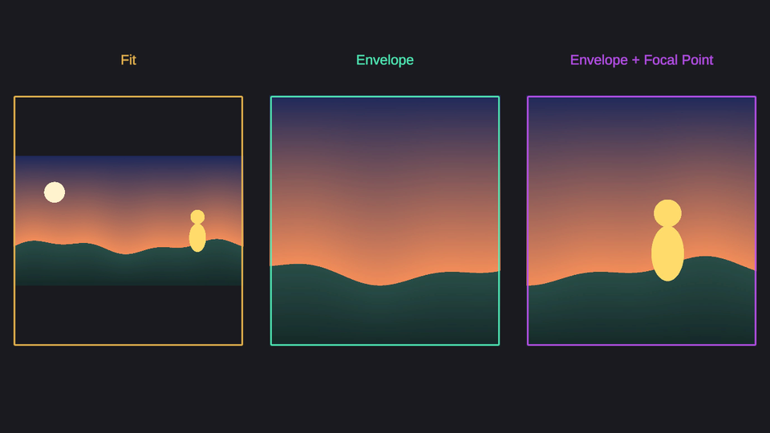

Smart UI Aspect Fitter component
Fits the Rect Transform into the parent Rect Transform with a set aspect ratio, anywhere between fitting inside the parent and covering it. Use it for images and backgrounds that must keep their proportions on every screen.

| Field | Description |
|---|---|
| Use Content Aspect Ratio | Take the aspect ratio from the texture of the RawImage, cropped by its UV Rect, or the sprite of the Image on the same GameObject. It follows the content when the texture or sprite changes. |
| Aspect Ratio | Width divided by height. Used when Use Content Aspect Ratio is off, or when the content has no texture or sprite. Shown in the Inspector only while Use Content Aspect Ratio is off. |
| Envelope Progress | 0 fits the Rect Transform inside the parent, the whole content is visible and empty space is left on two sides. 1 covers the whole parent, the content is cropped on two sides. Values in between do a bit of both. |
| Alignment | Where the Rect Transform sits inside the parent, from (0, 0) bottom left to (1, 1) top right. (0.5, 0.5) centers it, (1, 0) keeps it on the bottom right corner. When the content is larger than the parent, it decides which part is cropped. |
| Use Focal Point | Keep a point of the content on the Alignment point of the parent while the content covers the parent. |
| Focal Point | The point of the content to keep, from (0, 0) bottom left to (1, 1) top right of the content. |
The same picture in three frames that follow the screen shape: Envelope Progress 0 fits the whole picture inside its frame, 1 covers the frame, and 1 with a focal point covers the frame while keeping the character in view.

Focal point
With a focal point the content is moved so that the chosen point, for example a character's face, stays on the Alignment point of the parent, which is the center by default. The content only stops following the focal point where moving further would uncover an edge of the parent.
With Use Focal Point on, a selected Aspect Fitter shows the focal point as a yellow cross in the Scene view. Drag it onto the part of the content to keep. A cyan circle marks the Alignment point it is kept on.
Without a focal point, Alignment decides alone which part of the content stays visible: (0.5, 0.5) crops evenly on both sides, (0, 0.5) keeps the left edge.
Note
Smart UI Aspect Fitter component can work without UI Scaler in parent hierarchy. To keep it inside the safe area, place it under a UI Scaler with Use Safe Area enabled.
Covering the whole screen
To cover the whole screen with a picture, including the area outside the safe area, use two objects under the UI Scaler:
- A Rect Transform with a Smart UI Expander that expands to all four Canvas borders. Its rect is always the whole Canvas.
- Under it, a RawImage or Image with a Smart UI Aspect Fitter: Use Content Aspect Ratio on and Envelope Progress 1.
The picture then covers the screen on every screen shape without being stretched, and Alignment or the Focal Point decide which part stays visible.